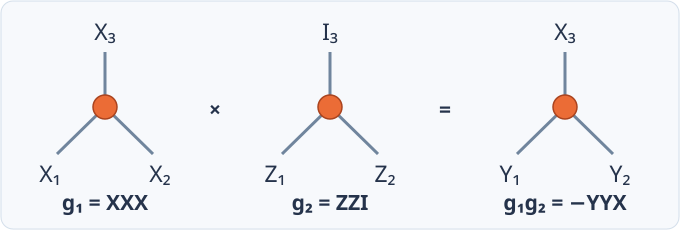

Correlation Surfaces¶
Preliminaries introduced correlation surfaces as representations of logical observables on a pipe diagram. To compute them, Bloq converts the block graph into a corresponding ZX diagram, where each block becomes a node and each pipe becomes an edge.
From a block graph to a ZX diagram¶
Bloq extends the X and Z spiders from Preliminaries with explicit nodes for open Ports, Y boundaries, T resources, and selective measurements. These specialized nodes retain the resource and measurement information needed to compute correlation surfaces:
Block graph element |
Corresponding ZX element |
Meaning |
|---|---|---|
X-type cube ( |
Zero-phase X spider |
Each incident pipe contributes a leg |
Z-type cube ( |
Zero-phase Z spider |
Each incident pipe contributes a leg |
Walking block |
X or Z spider, according to its boundary type |
The extended block contributes one node; its pipes attach at its start and end positions |
Patch rotation |
Zero-phase Z spider |
The extended block contributes one node with its displaced endpoint geometry |
Fixed X measurement cap |
One-legged, zero-phase Z spider |
Terminates the wire with an X-basis measurement |
Fixed Z measurement cap |
One-legged, zero-phase X spider |
Terminates the wire with a Z-basis measurement |
Y block |
Specialized Y node |
Y preparation or measurement; its fixed tensor is a one-legged Z spider with phase \(+\pi/2\) for preparation and \(-\pi/2\) for measurement |
Port |
Open boundary node |
Exposes a logical input or output; a multiplex Port also retains its stationary output |
T block |
Specialized T resource boundary |
An open resource leg during correlation analysis; its fixed T-state tensor is a one-legged Z spider with phase \(\pi/4\) |
Selective cap ( |
Specialized selective boundary |
Keeps both allowed measurement bases and the condition selecting between them |
Ordinary pipe |
Ordinary ZX edge |
Joins the corresponding nodes’ legs |
Hadamard pipe |
Hadamard ZX edge |
Exchanges X and Z across the connection |
Cube types use the boundary basis on the axis that differs from the other two. The conversion accounts for faces covered by pipe attachments before assigning the spider type. Pipe length and block duration affect the physical construction, while this diagram records the logical connectivity.
A selective cap stays open while its basis is unresolved. For a fixed choice, it becomes the X, Z, or Y measurement tensor in the table. The first named basis is selected when the resolve condition is true and the second when it is false. Structural branches similarly provide alternative node and edge patterns, as described under Dynamic choices.
Bloq builds the correlation space from the diagram’s local tensors and the constraints joining their pipe ends, then chooses surfaces for named readouts and output corrections:
flowchart LR src["ZX diagram"] --> loc["Local tensors<br/>rows per node"] loc --> seam["Seam elimination<br/>match pipe ends"] seam --> rel["Correlation space<br/>guarded basis"] rel --> named["Causal readouts<br/>named measurements"] named --> frames["Terminal frames<br/>output corrections"] frames --> rest["Logical readouts<br/>closed surfaces"]
The physical records that realize each chosen surface are bound later, during compilation.
Surfaces as binary vectors¶
A correlation surface assigns a Pauli operator to each place it can occupy. Bloq computes support on two kinds of places, called columns:
Column |
Count |
Meaning of its Pauli |
|---|---|---|
Half-edge |
Two per pipe |
The surface’s operator on that pipe, in the frame of the block it leaves |
Isolated block |
One per block with no incident pipe |
The independent memory observable of a block whose prepared and measured faces have no connecting pipe |
Each Pauli is stored as two bits \((x,z)\), with \(I=00\), \(X=10\), \(Z=01\), and \(Y=11\). A surface on \(C\) columns is therefore a vector in \(\mathbb{F}_2^{2C}\). Multiplying two surfaces multiplies their Paulis column by column, which XORs their bit vectors. Support is linear, so linear algebra over \(\mathbb{F}_2\) applies. Signs are not linear, and a later section treats them separately.
A Hadamard pipe exchanges X and Z between its two ends. Bloq keeps each half-edge in its own block’s frame and applies the exchange only where the two halves meet.
For a block with an incident pipe, center support is derived from its legs. At a Z spider the broadcast X bit equals the X bit of any leg; the physical crossing Z bit is present when any incident leg has Z support. An X spider exchanges X and Z. A Port, T resource, selective cap, or Y boundary copies its single leg’s Pauli in the boundary’s frame. The crossing bit uses OR rather than XOR, so Bloq reconstructs it after combining edge vectors, when the surface is queried or bound to physical records. It is not an algebraic column. Guarded topologies retain an isolated-block column wherever an active variant has no incident pipe.
Step 1: Local tensors¶
Bloq writes down a small set of generating rows for every ZX node. Each row is a surface confined to that block and its half-edges. The table below gives the rows for a node with \(k\) incident pipes:
ZX element |
Generating rows |
|---|---|
Z spider |
\(Z\) on adjacent legs \(i\) and \(i+1\), for \(i=1,\dots,k-1\); \(X\) on every leg |
X spider |
Exchange \(X\) and \(Z\) in the Z spider rows |
Open boundary (Port, T resource, or selective cap) |
\(X\) on the leg; \(Z\) on the leg |
Y node |
\(Y\) on the leg |
For a Z spider with three legs, the rows are
These rows generate exactly the spider rule from Preliminaries: X support occupies all legs or none, and Z support occupies an even number of legs. A block has at most six incident pipes, so it contributes at most six rows. Each row touches at most six columns.
A closed face adds no leg. An isolated-block column carries its value instead: a single cube with a prepared and a measured face has only one row, on its center, which is the memory observable.
Step 2: Seam elimination¶
A pipe joins two half-edges, \(a\to b\) and \(b\to a\). A surface is consistent on the pipe when both halves carry the same Pauli. This gives two linear constraints per pipe:
A Hadamard pipe pairs \(x_{a\to b}\) with \(z_{b\to a}\) and \(z_{a\to b}\) with \(x_{b\to a}\) instead.
Bloq starts from all local rows and imposes the constraints one at a time:
for each seam constraint c, in sweep order:
S ← rows that violate c (found through a column index)
if S is empty: continue (c already holds)
p ← first row in S
for each other row r in S:
r ← r ⊕ p (r now satisfies c)
remove p
Each step keeps exactly the combinations of rows that satisfy the constraint. After the last pipe, the remaining rows form a basis of the correlation space. The internal columns are not deleted: a row’s support on internal half-edges is the surface as it is drawn in the viewer.
Constraints are processed in the order of their later endpoint’s time layer, so elimination sweeps forward through the computation. The column index visits only rows that touch the current pipe. Rows that no longer touch an unprocessed pipe are not visited again. Readout planning later reorders columns along the graph’s longest spatial extent to limit fill-in. That reordering does not change the source equation order.
The size of the space¶
Let \(P\) be the number of pipes, \(L\) the number of open legs (Ports, T resources, and selective caps), and \(I\) the number of isolated X/Z blocks. Every pipe end belongs to a node’s leg list, so the local rows number
Each of the \(2P\) constraints either finds a pivot and removes one row, or already holds. Let \(\delta\) count those that already hold. The final basis then has
rows. \(L\) of them describe how open legs relate. The other \(I+\delta\) are closed surfaces, which touch no open leg. Memory and stability observables, and merge parities whose surface closes on measurements, belong to this group. Gallery graphs show both terms:
Graph |
Open legs \(L\) |
Basis size \(r\) |
Closed surfaces \(I+\delta\) |
|---|---|---|---|
|
0 |
1 |
1 |
|
2 |
2 |
0 |
|
4 |
4 |
0 |
|
4 |
4 |
0 |
|
7 |
7 |
0 |
Signs¶
Support alone does not determine a relation. A three-leg Z spider has generators \(g_1=X_1X_2X_3\) and \(g_2=Z_1Z_2\), both with eigenvalue \(+1\). Their exact product is
The unsigned operator \(Y_1Y_2X_3\) therefore has eigenvalue \(-1\). If those three operators are measured, their outcome bits obey \(y_1\oplus y_2\oplus x_3=1\). A detector or readout built from the correct support but the wrong sign reports the opposite parity.

The sign is part of the relation.¶
A correlation surface carries Pauli support and a constant sign. For a fixed Clifford process \(K\) with outcomes \(\mu\), its complete relation reads
where \(P\) acts on inputs and open resource legs, \(Q\) acts on outputs, \(h\) selects the measurement outcomes, and \(\sigma\) is the constant parity in the chosen operator and outcome convention. Each local minus toggles this bit.
A complete tensor witness determines its sign from local Pauli algebra:
Every pair of Y legs at an X/Z spider contributes a minus.
An open boundary’s XX and ZZ generators multiply to a negative YY center-and-leg pair.
A terminating Y effect contributes a minus from transposition.
Moving Y through a Hadamard changes its sign: \(HYH=-Y\).
Contracting two Y half-edges contributes a minus.
These rules use the tensor’s local frames. The tensor representation of an input-to-output map uses transposed input operators. Converting it to operator transport adds a minus for each input Y because \(Y^T=-Y\). For example, the YY stabilizer of a Hadamard tensor is positive while Y transport through H still carries a minus. These are expressions of the same signed correlation in different conventions; count every factor once in the chosen convention.
Compilation binds each local Pauli pattern to the physical measurement records and boundary operators that realize it. Known constants enter the resulting parity where required by the readout convention. Named measurements and output frames retain their authored outcome labels; closed logical checks absorb known offsets into their reference parity. Binding does not add the tensor sign a second time.
Projection can erase local factors, so signed witnesses and module reference certificates preserve their contribution. Elimination multiplies these signed rows with phases modulo four instead of losing their signs through XOR alone.
Dynamic choices¶
Selective caps and structural branches make a block graph a family of graphs. Assign a value to every selector variable, and you obtain one ordinary graph. With \(s\) independent selectors, eliminating each graph separately would cost \(2^s\) times one elimination. Bloq runs a single elimination instead, over coefficients that are Boolean functions of the selectors.
Guarded rows¶
Each row has an activation guard \(a(\chi)\), and each of its bits is a Boolean function of the selector assignment \(\chi\). Bloq stores these functions as reduced ordered binary decision diagrams, so equal functions share storage. The construction changes in three places:
Local tensors. A block whose shape depends on a choice contributes each distinct local row once. That row is active on the OR of the guards of the variants that produce it.
Pivot choice. For each assignment, the pivot is the first candidate that violates the constraint under that assignment. Candidate \(r\) becomes the pivot on the guard \(a_r(\chi)\wedge c(r)(\chi)\wedge\neg(\text{earlier pivot})\). Pivot guards stay disjoint.
Scaled XOR. A row is updated as \(r\leftarrow r\oplus f(\chi)\,p\), where \(f\) is the row’s own constraint value.
The invariant is pointwise. For every reachable assignment \(\chi\), the active rows evaluated at \(\chi\) span the correlation space of the graph that \(\chi\) selects. Hadamard pipes inside a branch work the same way: the seam constraint receives the guard under which that pipe is a Hadamard.
The number of independent surfaces can depend on the choice. Elimination with a guarded coefficient \(b\) can produce
which has rank two for \(b=0\) and rank one for \(b=1\). The second row is active only on \(b=0\), and the guarded basis retains it only there.
Selective caps¶
A selective cap measures one of two bases. Its incident-leg Pauli must commute with the chosen basis \(B\). For \(B=(B_x,B_z)\) this is the linear constraint
whose coefficients depend on the selector. An XY cap chooses \(X\) when its selector \(b\) is true and \(Y\) when it is false, so the constraint becomes \((1\oplus b)\,x_e\oplus z_e=0\). It permits \(\{I,Y\}\) for \(b=0\) and \(\{I,X\}\) for \(b=1\). Bloq imposes this constraint by the same elimination as a seam.
Keeping alternatives as guarded rows matters because their union is not a vector space. Multiplying the \(X\) and \(Y\) alternatives yields \(Z\) support, which neither arm admits.
Guards describe source reachability: which Boolean assignments the authored control can produce. They say nothing about Born probabilities. A reachable choice can have zero probability for a particular input or resource state, and a signed stabilizer relation does not by itself establish a non-Clifford branch’s probability.
Step 3: Causal readouts¶
A named measurement m = measure target needs a surface whose physical parity
reads \(m\). Bloq adds one named coordinate \(n_m\) to every row. Its value is
the row’s bit at the target column on the measured axis. A surface \(w\) can
serve as the readout of \(m_i\) when it meets four conditions:
Named projection. \(n_{m_i}(w)=1\), and every other named coordinate in \(w\) belongs to a measurement already known.
Output closure. \(w\) has identity support on every live output.
Availability. Every guard and coefficient in \(w\) depends only on known outcomes. \(w\) avoids blocks whose shape still depends on an unknown outcome. Its overlap with any feedback whose condition is still unknown is even.
Activation. \(w\) is active on every reachable choice.
Some readouts must wait for earlier values. A selective cap can be read only after the value that chooses its basis is known. Bloq therefore plans in causal waves:
known ← outcomes that this graph does not name
V ← correlation space with live outputs eliminated and selective caps filled
while some named measurement is unknown:
impose availability for the current known set
reduce V on the coordinates of unknown names
accept every name m whose reduced row is n_m alone,
always active, and computable from known values
if nothing is accepted: fail with UnavailableControlParity
known ← known ∪ accepted names
Availability constraints only relax as values become known. Bloq keeps their pivots between waves and releases each constraint when its condition becomes available, so later waves do not restart elimination. An accepted readout is removed from the live relation, and later readouts refer to it by name.
Corrected values¶
An accepted surface becomes a recipe for the corrected named value:
The \(L_{ij}\) terms, called folds, are the named coordinates of earlier measurements in \(w_i\). \(\sigma_i\) is the constant sign expressed in this readout’s outcome convention, and \(\widehat\delta_i\) is the decoder’s flip estimate for this readout.
Folds use corrected values, not raw records. Suppose a first parity \(r_1\) reads \(m_1\), while a later parity \(r_{2,b}\) reads \(m_2\oplus m_1\) under a choice \(b=m_1\). With decoder estimates \(\widehat\delta_1\) and \(\widehat\delta_2\):
If a record error turns an ideal \(m_1=1\) into \(r_1=0\), the decoder estimate \(\widehat\delta_1=1\) still selects \(b=1\). Selecting from the raw record would run a different continuation.
Why readouts must close before live outputs¶
A relation that touches a live output can flip because of a record error or an
error on that output. A decoder estimate for that relation then does not
estimate the record’s error alone, and execution does not measure the output
to tell the two apart. Every named readout therefore needs identity support on
ordinary live outputs in every reachable choice. The spatial Multiplex
interface admits \(I\) or \(Z\) support, because its physical split routes X and Y
requests to the separate output.
Closure applies to the chosen readout surface, not to every basis row. Another combination from the complete relation can supply an output-safe representative when one basis row reaches an output.
Readouts at a spider¶
A named measurement on a cube’s cross axis, such as a merge parity read at the cube, crosses the spider through two of its legs. That value is not linear in the center column. Bloq selects readable representatives from the composed relation and plans with their dual coordinates. A conditional presentation of such a readout is rejected with a typed error rather than replaced by one branch.
Step 4: Terminal frames¶
After every named value is known, the remaining surfaces determine the Pauli frame of each surviving output:
Remove named coordinates. Eliminate each \(n_m\). The rows left have zero named projection, so a frame equation cannot reuse a named record implicitly.
Fill selective caps. Impose every cap’s commutation constraint.
Pivot on outputs. For each output and each of its two bits, eliminate that column. The pivot row is the frame equation for that axis. X support on an output constrains its Z correction, and Z support constrains its X correction. A
Multiplexoutput pivots on its X bit only.Normalize inputs. Reduce each frame equation’s input operators against surfaces with no output support. That reduction preserves prepared T resource operators and the
MultiplexZ direction.Keep the rest. Rows still left touch no output. They become logical readouts, such as memory and stability observables.
Frame equations stay in echelon form. An equation can contain bits of a later output. Those bits become guarded references to the later frame value, and the emitted classical program performs the back-substitution. Expanding every earlier equation through every later pivot instead can make the Boolean coefficients grow exponentially.
Each frame equation has its own decoder flip: the XOR of its corrected and raw observables. The raw terms are exactly the surface’s physical parity, so the frame reads the corrected observable directly.
Feedback¶
A Pauli feedback action contributes to every surface that anticommutes with it. For a feedback \(F\) on a wire, the coefficient on surface \(w\) is the symplectic product of \(F\) with \(w\)’s Pauli on that wire. Bloq XORs this over every target, including duplicates, and ANDs the result with the action’s condition. Known feedback enters a recipe as a fold; feedback whose condition is still unknown imposes an availability constraint.
What the plan produces¶
Planned surface |
Physical result |
|---|---|
Named readout |
Raw parity, decoder query, and corrected value |
Terminal frame equation |
Pauli-frame bit for the surviving output |
Closed logical surface |
Logical observable for decoding |
The plan does not contain detectors. Detectors come from the physical templates’ stabilizer flows, which compilation composes across blocks. Logical support alone does not determine every physical check.
Module composition¶
For modular graphs, Bloq computes correlations from the innermost instances outward. Each child first closes its internal seams. Its relation retains both correlations reaching its exposed Ports and closed surfaces within the child, together with their signs and internal support.
The parent combines these child relations with its own local tensors and applies the same seam constraints at connected Ports. Pauli support must match across each connection, with X and Z exchanged on a Hadamard seam. Compatible combinations form the parent’s correlation space. Repeating this through the hierarchy produces surfaces that can span several module instances.
Named readouts and terminal frames are then selected from the composed relation using the guarded and causal rules above. Classical bindings and feedback can create dependencies across modules. Named readouts are checked both within their definitions and after composition to ensure they still close before live outputs.